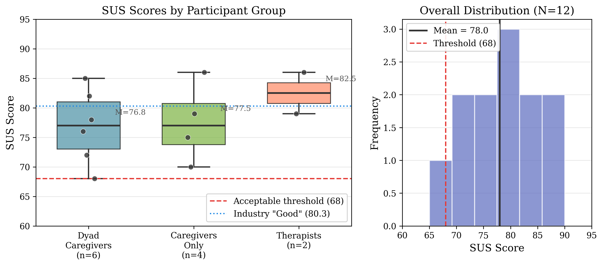
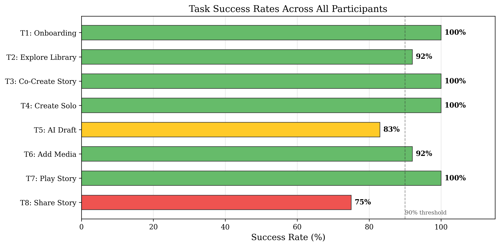
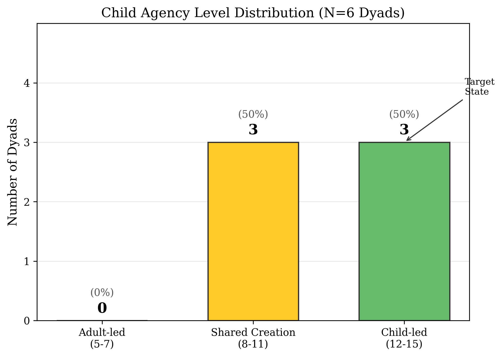

We're looking for autistic individuals, their families, and clinicians to join our user research study at the University of Washington Bothell.
We are a research team at the University of Washington Bothell developing Mystoria, an iPad app that uses AI-powered social stories to help autistic individuals prepare for everyday experiences like getting a haircut, traveling, or navigating new environments.
This project is led by Prof. Annuska Zolyomi and her Interaction Design for Education and Accessibility (IDEA) Lab — a team of graduate and undergraduate students dedicated to inclusive technology research.
Social stories, developed by Carol Gray, are a well-established intervention used by families, educators, and therapists worldwide. Mystoria brings this methodology into a modern, accessible app — and we need your help to evaluate its effectiveness and usability.
We are looking for participants in the following groups:
Autistic individuals and their family members who want to explore personalized social stories.
Professionals who work with autistic clients on understanding social and emotional experiences.
Participation involves in-person sessions in the Seattle or Eastside area.
As a thank-you for your time, participants will receive a $30 Amazon gift card upon completion.
Participation involves an in-person session where you'll get hands-on experience with Mystoria:
Your participation is entirely voluntary. You may withdraw at any time without penalty.
Our initial user study with 12 participants (caregiver-child dyads, caregivers, and therapists) has shown promising results:

Mean SUS score of 78.0 across all participants, with therapists rating the app at 82.5 — above the industry "Good" benchmark of 80.3.

100% success rate on core tasks including onboarding, story co-creation, solo creation, and story playback.

50% of caregiver-child dyads achieved child-led story creation, with zero adult-led sessions — children actively engaged with the process.
Your privacy and your child's privacy are our top priority.
This study has been reviewed and approved by the University of Washington Institutional Review Board (IRB).
If you are interested in participating or learning more, please reach out to us. We'd love to hear from you.
Contact Us at idealab@uw.eduParticipants receive a $30 Amazon gift card upon completion.